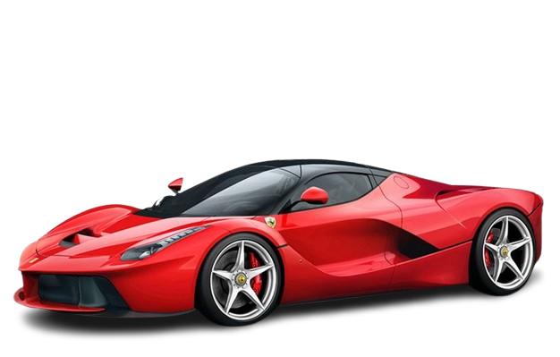

ferrari
about ferrari
Ferrari S.p.A. (/fəˈrɑːri/; Italian: [ferˈraːri]) is an Italian luxury sports car manufacturer based in Maranello. Founded in 1939 by Enzo Ferrari (1898–1988), the company built its first car in 1940, adopted its current name in 1945, and began to produce its current line of road cars in 1947. Ferrari became a public company in 1960, and from 1963 to 2014 it was a subsidiary of Fiat S.p.A. It was spun off from Fiat's successor entity, Fiat Chrysler Automobiles, in 2016. The company currently offers a large model range which includes several supercars, grand tourers, and one SUV. Many early Ferraris, dating to the 1950s and 1960s, count among the most expensive cars ever sold at auction. Throughout its history, the company has been noted for its continued participation in racing, especially in Formula One, where its team, Scuderia Ferrari, is the series' single oldest and most successful. Scuderia Ferrari has raced since 1929, first in Grand Prix events and later in Formula One, where it holds many records. Historically, Ferrari was also highly active in sports car racing, where its cars took many wins in races such as the Mille Miglia, Targa Florio and 24 Hours of Le Mans, as well as several overall victories in the World Sportscar Championship. Scuderia Ferrari fans, commonly called tifosi, are known for their passion and loyalty to the team. Ferrari is one of the world's strongest brands, and it maintains a brand image built around racing heritage, luxury, and exclusivity. As of May 2023, Ferrari is also one of the largest car manufacturers by market capitalisation, with a value of approximately US$85.5 billion.
early history
Enzo Ferrari, formerly a salesman and racing driver for Alfa Romeo, founded Scuderia Ferrari, a racing team, in 1929. Originally intended to service gentleman drivers and other amateur racers, Alfa Romeo's withdrawal from racing in 1933, combined with Enzo's connections within the company, turned Scuderia Ferrari into its unofficial representative on the track. [8] Alfa Romeo supplied racing cars to Ferrari, who eventually amassed some of the best drivers of the 1930s and won many races before the team's liquidation in 1937.[8][9]: 43 Late in 1937, Scuderia Ferrari was liquidated and absorbed into Alfa Romeo,[8] but Enzo's disagreements with upper management caused him to leave in 1939. He used his settlement to found his own company, where he intended to produce his own cars. He called the company "Auto Avio Costruzioni", and headquartered it in the facilities of the old Scuderia Ferrari;[1] due to a noncompete agreement with Alfa Romeo, the company could not use the Ferrari name for another four years. The company produced a single car, the Auto Avio Costruzioni 815, which participated in only one race before the outbreak of World War II. During the war, Enzo's company produced aircraft engines and machine tools for the Italian military; the contracts for these goods were lucrative, and provided the new company with a great deal of capital. In 1943, under threat of Allied bombing raids, the company's factory was moved to Maranello. Though the new facility was nonetheless bombed twice, Ferrari remains in Maranello to this day.